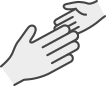
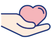
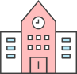

-

1회기
나와 자녀의
관계 이해하기 -

2회기
나와 자녀의
관계 증진하기(1) -
 3회기
3회기
나와 자녀의
관계 증진하기(2) -
 4회기
4회기
부모로서의
자신 모습찾기
- 시작하기
- 첫째,
우리 아이
잘 교육하기 - 둘째,
한국의 교육제도
이해하기 - 셋째,
자녀의
학교생활 돕기 - 넷째,
학습 및 언어지원
도움정보 - 정리하기
자녀의 학교생활 돕기
초등학생
중학생
고등학생
방과후(초,중,고)
초등학생
#입학 전 부모가 알아두어야 할 학교 정보
입학 전 미리 알아두기
· 학교 이름 알고 말하기
· 자신과 가족의 이름 쓰기
· 한글 자음과 모음 공부
· 기본숫자 알기(1~100)
· 연필, 크레파스, 가위, 지우개 쓰는 법 익히기
· 색 이름 알기
· 자기물건과 남의 물건 구별하기
· 집 주소와 전화번호 알고 전화 걸고 받을 줄 알기
· 식사할 때 기본 예절 알기
입학 준비
· 초등학교 예비소집일에 참여하면 준비물에 대해 자세히 안내가 이루어진다. (책가방, 연필, 지우개, 크레파스, 색연필 등 학용품에 이름쓰기 )
· 예방접종, 치과치료를 미리 하고 특별한 음식에 대한 알레르기를 확인한다.
· 집에서 학교까지 걸어 다니는 길을 확인하고 우측통행, 횡단보도, 교통신호 등을 알려준다.
입학 초기 학교생활 적응 지도
· 학교에 대한 적응을 위해 학교를 미리 방문하여 둘러보고 재미있는 곳이라고 알려준다.
· 선생님은 알고 싶은 것, 알아야 할 것을 가르쳐 주시는 분으로 학교생활을 도와주시는 분이라고 알려준다.
· 자기 일은 스스로 할 수 있도록 연습한다. (학용품정리, 책가방 정리, 세수하기, 정리정돈, 화장실사용)
중학생
#학교폭력에 대해 미리 알아두기
학교폭력이란 학생들을 대상으로 발생한 폭행, 협박, 강제적 심부름, 따돌림, 사이버따돌림 등 신체적, 정신적 피해를 가져오는 행위를 말합니다.
학교폭력 피해증상을 알 수 있는 자녀의 행동
· 옷이나 운동화, 안경 등을 자주 잃어버리거나 망가뜨린다.
· 몸에 다친 상처나 멍 자국을 자주 발견한다. 물어보면 그냥 넘어졌다거나, 운동하다 다쳤다고 한다.
· 교과서나 가방, 공책 등에 낙서가 많이 있다.
· 용돈이 모자란다고 하거나 말도 없이 집에서 돈을 집어 간다.
· 몸이 좋지 않다고 말하며 학교 가기를 싫어한다.
· 친구에게서 전화나 메시지 오는 것을 싫어한다.
· 갑자기 이사를 가자고 하거나 전학을 보내 달라고 한다.
· 갑자기 성적이 떨어진다.
· 예전보다 화를 자주 내고, 눈물을 보인다
대처방법
· 담임선생님에게 즉시 상담 요청해서, 피해 상황에 대해 설명한다. 만약 그것이 힘들다면 국번없이 ☎117 학교폭력신고센터로 전화해서 도움을 요청하면 됩니다.
#자녀의 진로고민
중학교 자녀의 진로지도를 위해 다양한 직업세계를 파악하고 중학교 이후의 진로를 디자인하고 계획할 수 있도록 준비합니다.
저는 무엇을 잘 할 수 있을까요?
· 무엇을 원하는지, 어떤 삶을 만들어가고 싶은지 자기 자신을 알아가도록 함.
· 자신의 적성과 흥미, 성격과 가치관을 알아가도록 함.
· 심리검사를 통해 객관적으로 자신을 점검해 볼 수 있도록 함.
한국어를 못하는데 한국에서 제가 무엇을 할 수 있을까요?
· 언어는 노력으로 극복할 수 있으며 이중언어가 국제화 시대에 강점이 될 수 있다는 것을 통해 자신감을 높임.
· 한국어 공부를 도와줄 수 있는 멘토학생이나 이중언어 학습지원을 학교에 요청함.
워크넷 (work.go.kr)
워크넷에는 우리나라 800여개 직업에 대한 정보가 수록된 한국직업정보시스템이 있으며, 지식, 업무수행능력, 직종 등의 키워드 검색으로 원하는 정보를 간단하게 얻을 수 있음.
커리어넷(career.go.kr)
커리어넷은 초등학생부터 성인, 교사 등 대상별로 진로 및 직업 정보를 제공하며 온라인 진로상담도 실시함.
서울진로진학정보센터(jinhak.or.kr)
서울시에서도 진로진학 결정에 도움을 주기위해 운영함.
한국 잡월드(koreajobworld.or.kr)
진로 체험 장소
#중학교 성적표 보는 방법
성취율(공부의 목적을 달성한 정도를 알 수 있는 등급)은 A,B,C,D,E로 나누어져 있습니다.
A등급에 가까울수록 우수한 점수입니다.
나이스학부모서비스에서 성적표를 확인할 수 있습니다. (neis.go.kr)
고등학생
#자녀의 진로고민
고등학생이 갖는 진로와 관련된 관심과 고민은 진학과 취업이라는 선택을 해야 하기 때문에 관련된 내용을 파악해 두는 것이 도움이 됩니다.
다문화학생들이 지원할 수 있는 대학입시 특별전형에는 어떤 것이 있을까요?
· 순수 외국인, 재외국인 및 외국인, 다문화가정, 외국어 특기자 전형 등 4가지 전형으로 지원할 수 있음.
- 순수외국인
전형 - 자격조건
부모, 학생 모두 외국인
- 전형요소
서류, 면접, 필답고사 등
- 지원시기
대학자율보통 연2회 모집
(3월, 9월 입학) - 모집학교수
185개교
- 재외국민 및 외국인
전형 (정원외2%이내) - 자격조건
외국에서 고등학교 과정을 포함하여 2년 이상 수학한 자
- 전형요소
서류, 면접, 필답고사 등
- 지원시기
수시 위주, 일부 정시
- 모집학교수
136개교
- 다문화가정
전형 - 자격조건
부모가 결혼이전에 1인은 외국국적, 1인은 한국 국적인 가정의 자녀
- 전형요소
학생부, 자기소개서, 추천서, 면접 등
- 지원시기
수시, 일부 정시
- 모집학교수
80개교
(고른기회, 사회배려대상자, 사회통합 등도 포함)
- 외국어특기자
전형 - 자격조건
어학 능력을 갖춘 자, 공인 외국어 성적 보유자
- 전형요소
공인어학 성적, 외국어면접, 학생부, 자기소개서 등
- 지원시기
수시, 일부 정시
- 모집학교수
25개교
다문화 학생의 진학에 유리한 학과가 있나요?
· 학과 선택시 먼저 고려해야 할 것은 학생의 흥미・적성, 졸업 후 진로, 학과의 발전 가능성 등입니다. 다문화 학생들이 경쟁력을 갖고 발전할 수 있는 학과중심으로 소개하면 다음과 같습니다.
외국어학과
· 개요 : 다문화학생들은 이중 언어를 할 수 있다는 강점이 있기 때문에 어학 특기자 전형으로 해당 외국어학과로 대학교 진학이 쉽고 경쟁력이 있어 발전가능성이 크다.
· 졸업 후 진로 : 번역가, 외교관, 통역가, 학원 강사, 교사, 출판사, 무역회사, 여행사, 호텔, 기업일반 사무직 및 해외영업직, 해외 현지 기업, 사설 학원 등
· 세부관련학과 : 독어독문학과, 러시아 어문학과, 불어불문학과, 스페인어학과, 영어과, 영어영문학과, 영어학과, 일본어과, 일어일문학과, 중국어과, 중어중문학과 등
무역학과
· 개요 : 무역학과 국가와 국가 간의 경제활동으로써 언어의 강점과 두 개의 문화에 대한 이해도도 높으므로 접근하기도 쉽고, 세계화된 마인드를 갖고 있다면 충분히 기회를 가질 수 있을것임.
· 졸업 후 진로 : 종합상사 등 무역회사, 기업체 일반 사무직 및 해외 영업직, 유통회사, 물류회사, 해운회사, 해외 현지 기업 등
· 세부관련학과 : 국제무역 경제학부, 국제무역 물류학과, 국제무역학과, 무역경영학부, 무역유통학과, 무역통상학과, 무역학과, 물류무역전공, 전자무역학과, 무역학전공, 무역학부, 국제무역물류학전공, 국제무역학전공
관광학과
· 개요 : 외국어에 강점이 있는 다문화학생 중에 세계 여러 문화를 체험하고 배우는 데 흥미를 느끼는 사람이고 다양한 인적 네트워크를 만드는 데 소실이 있고, 여러 관광 상품을 만들고 관광자원을 개발하는데 소질이 있다면 지원할 수 있음.
· 졸업 후 진로 : 여행사, 호텔업체, 테마파크, 항공사, 이벤트 기획업체, 기업체 일반 사무직 및 해외 영업직, 해외 현지 호텔 및 기업 등
· 세부관련학과 : 국제 관광학과, 호텔 관광경영학과, 관광 경영계열, 관광계열, 관광학부, 복지관광경영과, 의료관광코디네이션과, 중국 관광전공 등
관광통역학과
· 개요 : 관광학과와 유사하나 외국어에 더 중점을 두고 있는 학과라고 할 수 있다. 따라서 언어적 강점을 살리고 싶거나 관광 가이드와 같은 진로에 꿈이 있다면 관광통역학과로 도전할 수 있음.
· 졸업 후 진로 : 관광통역안내원, 관광호텔접객종사원, 선박 및 열차객실승무원, 여행상품개발원, 여행 안내원, 호텔 종사원
· 세부관련학과 : 관광일본어전공, 관광영어전공, 관광중국어계열, 관광면세일본어전공, 관광영어과, 한중문화통역과, 항공관광영어과, 호텔관광영어과 등
방과후(초,중,고)
#방과 후 보육 및 교육서비스 제공기관
저소득가정이나 맞벌이 부부의 자녀들에게 부모를 대신하여 방과 후 보육 및 교육서비스를 지원합니다.
- 지역아동센터
- 대상
저소득층 아동중심 (18세미만)
- 운영시간
주5일, 1일 8시간 이상
- 서비스내용
보호·학습지도, 급식, 상담, 지역사회 연계 등 통합서비스
- 비용부담
무료
- 문의처
전국 지역아동센터 공부방 협의회
02-732-7979
kacc.org
- 청소년방과후아카데미
- 대상
· 저소득층, 장애 및 다문화청소년
· 초등 4학년~중등 3학년 - 운영시간
주 5~6일, 하루4시간
- 서비스내용
특기적성 교육, 보충학습, 급식 등 종합서비스
- 비용부담
선발 시 전액무료
- 문의처
전국 방과후아카데미 대표 홈페이지
youth.go.kr
- 방과후 학교
- 대상
· 방과후학교 : 초·중·고 학생
· 초등돌봄교실 : 맞벌이·저소득층·한부모 가정 등 - 운영시간
· 방과후학교 : 학교정규수업 이후 다양한 프로그램 개설
· 초등돌봄교실 : 학교정규수업 이후~17시 - 서비스내용
· 방과후학교 : 교과 및 특기적성프로그램
· 초등돌봄교실 : (단체활동)예체능, 놀이 체험활동 / (개인활동)숙제, 일기쓰기, 독서, 기타활동 등 - 비용부담
· 방과후 학교 : 과목별 별도의 금액책정
· 초등돌봄교실 : 지원대상 학생은 전액 무료 - 문의처
자녀의 학교에 문의
#온라인 학습지원 사이트
e학습터(초등학교1학년~중학교 3학년 교육과정) cls.edunet.net
ebs초등 primary.ebs.co.kr
ebs초등 mid.ebs.co.kr
ebs초등 www.ebsi.co.kr